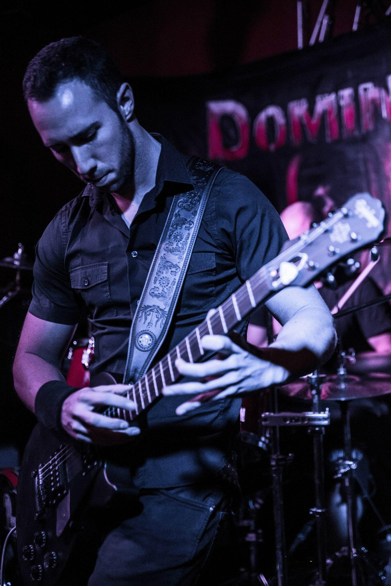

Guitarrista · Compositor · Fundador de In Verso

Iván Vázquez Vidador es un guitarrista, compositor y músico español que ha dejado una huella significativa en el panorama del metal melódico español contemporáneo como fundador y miembro clave de la banda IN VERSO.
Su conexión con la música comenzó de manera temprana. A los 9 años ya sostenía una guitarra en sus manos y, sin instrucción formal reglada, se convirtió en un músico autodidacta, desarrollando su talento a través de la exploración personal y la práctica dedicada. Esta formación autodidacta no limitó su creatividad, sino que la canalizó de forma única: a los 14 años ya estaba componiendo sus propias canciones, demostrando una temprana inclinación hacia la creación musical y revelando una pasión precoz por la composición.
Durante su juventud, Vázquez Vidador combinó su vocación musical con su formación académica, cursando la carrera de Informática de Gestión y Telecomunicaciones en Madrid. Esta doble dedicación refleja una realidad común entre muchos músicos de metal: la necesidad de buscar estabilidad económica a través de una carrera profesional mientras mantienen activa su pasión creativa.
Su carrera en el sector tecnológico eventualmente lo llevaría a cambiar de ciudad, un desplazamiento que tendría implicaciones significativas para su proyecto musical más importante.
Mientras aún estudiaba en Madrid, Vázquez Vidador dio vida a su sueño de formar una banda de metal melódico, concepto que se materializó en la creación de IN VERSO. Su visión artística era clara y ambiciosa: crear una propuesta única que combinara letras en español e inglés con una fusión innovadora de sonidos limpios y distorsionados dentro de una misma canción, un enfoque que marcaba diferencia respecto a las convenciones del género.
La banda se consolidó inicialmente con Eduardo Guilló como bajista y vocalista, logrando destacar rápidamente por su originalidad y calidad musical. El proyecto alcanzó su punto de madurez artística con la grabación de su álbum debut «Corvux Corax», realizado en el prestigioso PKO Studio de Madrid bajo la producción de Emilio Mercader, una grabación que representaba la visión artística completa de Vázquez Vidador y su dedicación al craft musical.
La banda es catalogada en la comunidad internacional de metal como un proyecto de Metal Progresivo / Melódico de Muerte (Progressive/Melodic Death Metal), originario de Madrid y formado en 2010.
A pesar de haber alcanzado reconocimiento musical y la culminación artística con su álbum debut, los compromisos profesionales en la industria tecnológica eventualmente llevaron a Vázquez Vidador a cambiar de ciudad, lo que resultó en la disolución de IN VERSO. Sin embargo, este cambio en su trayectoria profesional no extinguió su pasión musical.
En la actualidad, mantiene una excelente relación con los antiguos miembros de la banda y continúa activo creando música, componiendo nuevas melodías y letras, con la ilusión persistente de materializar futuros proyectos musicales que retomen la energía creativa que caracterizó a IN VERSO.
De hecho, en plataformas como YouTube se pueden encontrar composiciones suyas interpretadas por otros artistas, como «Acoustic Letter of Dreams 8D», demostrando su continuidad compositiva.
Su legado en el metal melódico español persiste no solo a través de las grabaciones de IN VERSO, sino en su influencia compositiva y en la demostración de que es posible crear metal innovador que amalgama idiomas, texturas sonoras y propuestas conceptuales originales.